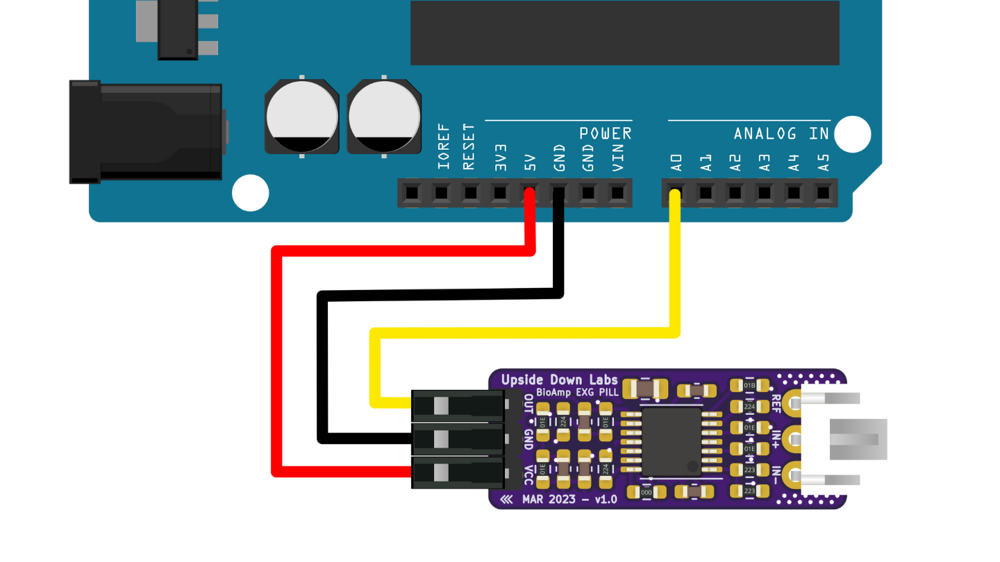
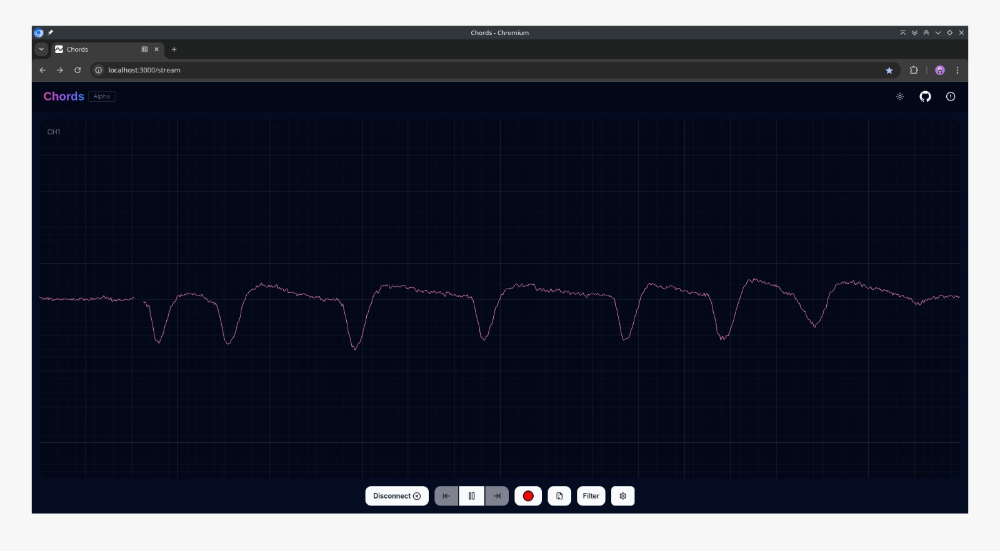
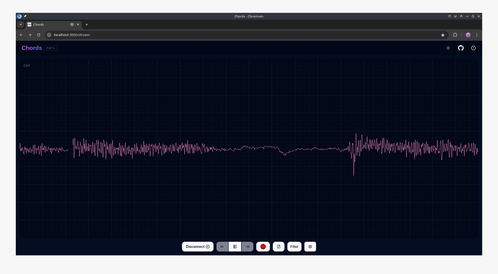
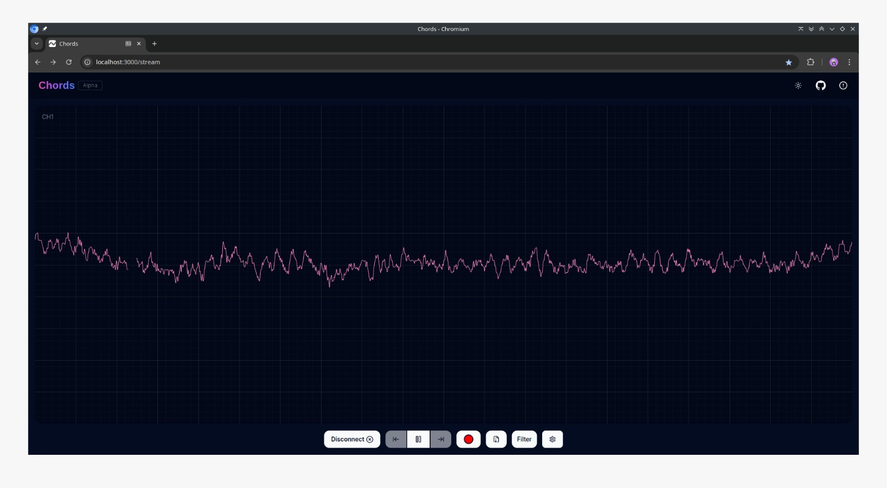
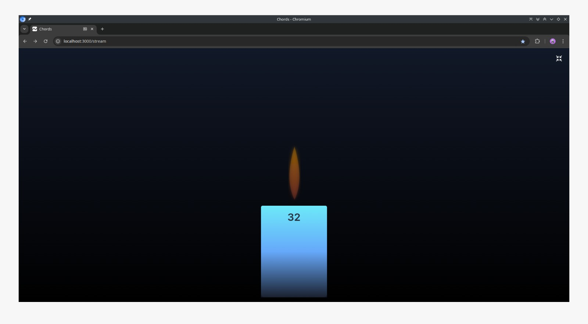

Kualitas Perekaman EEG#
Panduan ini akan membantu Anda mengatur dan memverifikasi sinyal EEG Anda menggunakan Hardware BioAmp dan perangkat lunak Chords.
Langkah 1: Persiapan Kulit#
Persiapan kulit yang tepat sangat penting sebelum merekam sinyal biopoten sial apa pun, baik itu Elektrokardiografi (ECG), Elektromiografi (EMG), Elektroensefalografi (EEG), atau Elektrookulografi (EOG). Ini membantu untuk:
Membersihkan permukaan kulit
Mengurangi impedansi elektroda-kulit
Meningkatkan kualitas sinyal secara keseluruhan
Note
Butuh bantuan dengan persiapan kulit? Lihat panduan lengkap di sini: Panduan Persiapan Kulit
Langkah 2: Menghubungkan Kabel BioAmp ke Hardware#
Hubungkan kabel BioAmp ke saluran input yang sesuai dari perangkat EEG Anda. Pastikan elektroda ground dan referensi terhubung dengan aman ke tubuh.

Koneksi hardware BioAmp#
Langkah 3: Menempelkan Elektroda Gel pada Area Target#
Tempatkan elektroda berbasis gel dengan kuat pada daerah kulit kepala target—biasanya lobus frontal (misalnya, Fp1, Fp2) atau oksipital (misalnya, O1, O2)—tergantung pada sinyal minat Anda. Pastikan elektroda memiliki kontak kulit yang baik dan tidak longgar.

Penempatan elektroda gel EEG#
Langkah 4: Buka Perangkat Lunak Chords untuk Memvisualisasikan Sinyal#
Buka browser berbasis Chromium seperti Google Chrome, Microsoft Edge, Opera, atau Brave.
Kunjungi: https://chords.upsidedownlabs.tech
Klik tombol Visualize Now di halaman utama dan kemudian klik tombol Chords-Visualizer di halaman berikutnya.
Hubungkan perangkat Anda melalui Serial dengan memilih port perangkat Anda.
Mulai visualisasi real-time sinyal EEG Anda.
Langkah 5: Cara Memeriksa Apakah Sinyal Benar#
Untuk memverifikasi penempatan elektroda yang benar dan kualitas sinyal yang baik, coba tindakan berikut dan amati respons EEG yang diharapkan.
Kedipan Mata
Kedipan menciptakan lonjakan tajam di sinyal EEG - ini adalah artefak EOG yang disebabkan oleh gerakan mata.

Bentuk gelombang kedipan mata#
Rahang Mengatup
Rahang mengatup kuat menghasilkan artefak EMG di sinyal EEG - ini disebabkan oleh aktivitas otot wajah.

Bentuk gelombang rahang mengatup#
Gelombang Alpha (Mata Tertutup)
Note
Ini mungkin atau mungkin tidak mudah diamati untuk semua pengguna.
Tutup mata Anda dan rileks. Kami merekam EEG dari korteks frontal untuk mengamati gelombang alpha (8–12 Hz), yang muncul lebih jelas saat Anda tenang.

Gelombang alpha EEG#
Tes Lilin Beta
Note
Ini mungkin atau mungkin tidak mudah diamati untuk semua pengguna.
Untuk mencoba ini: Buka Perangkat Lunak Chords → Chords Visualizer → FFT Visualizer → Hubungkan perangkat Anda (Serial/Bluetooth). Kemudian, aktifkan fitur Beta Candle. Fokus dalam pada lilin. Saat fokus Anda meningkat, kecerahan lilin dan nilai numerik harus meningkat. Saat Anda tidak fokus, nilai turun dan lilin redup atau padam.

Tes lilin beta#
Jika semua atau sebagian besar respons ini terlihat jelas, setup Anda benar, dan sinyal EEG Anda cukup stabil untuk analisis.